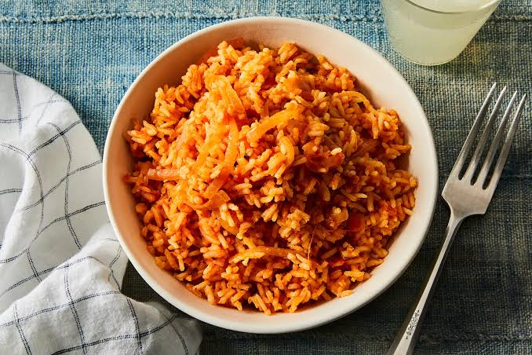
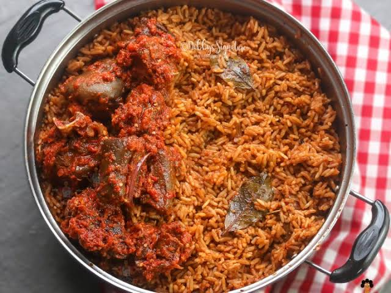

Jollof Rice
INGREDIENTS
Rice
Chicken stock
Groundnut oil
1 Tbsp Curry Powder
Tomato Paste
one onion medium sized(sliced)
White or black pepper to taste
1tbsp seasoning powder
1tbsp Salt to taste
2 bay leaves
Ginger and garlic
Blended pepper

PREPARATION
1:In a large pan,pre heat the cooking oil.once the oil is hot,add the diced onions and fry for about 3 to 5 minutes or till the onions become soft
2:Add the tomato paste.Fry for about 5 minutes,then add the garlic,ginger,and bay leaves and let it cook in the tomato paste for about two minutes
3:Add the blended pepper and allow the pepper to cook until the water is reduced entirely and the oil is seen floating on the fried pepper.
4:Season with thyme,currypowder,salt to taste,and seasoning cubes.Leave to to cook for another 2 to 5 minutes
5:Stir in the rice until it is well coated with the sauce.Add the chicken stock and cover it with a tight-fitting lid,then allow it to come to a boil.
6:Once it starts boiling-about 3 to 5 minutes after placking it on the stove,reduce the heat immediately to medium-low and steam until the rice is done.
7:Then off the heat and add the sliced tomato and onions and stir together briefly.Then cover it up immediately so that the heat remaining in the rice can steam up the vegetables a little bit.
8:You can serve with plantains,chicken,vegetables or as desired.
ENJOY!
